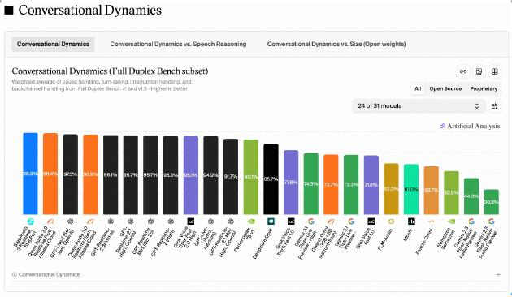
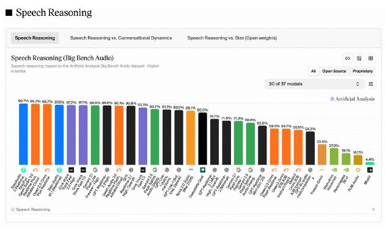

9月14日，苹果发布了全新的Siri AI。支持16种语言，包括中文。但你在中国大陆用不了。
苹果官网脚注写得明明白白，Siri AI和其他新一代Apple Intelligence功能在中国暂不可用，仍在处理监管要求（来源，IT之家/苹果官网）。你9月18日拿到手的国行iPhone 18 Pro，发布会上讲了一半篇幅的语音AI卖点，处于待机状态。
然后第二天。
9月15日，一家中国公司一口气发布五款语音大模型，多款拿下全球第一。
不是在中文榜单上第一。是在Artificial Analysis的全球评测上第一。
这个公司叫阶跃星辰。你可能没听过这个名字，但在语音AI这个赛道，他们刚刚做了一件让整个行业都不得不抬头看的事。
我自己看到这个时间线的时候愣了一下。苹果的Siri AI还在等监管审批，中国本土的语音AI已经把全球顶级的评测榜单打穿了。这中间的落差，不是一个功能缺失的问题，是整个赛道节奏的问题。
说真的，语音大模型可能是2026年最被低估的AI方向。大家都在聊大语言模型、聊Agent、聊AI编程，但语音交互这件事，一直被当作"锦上添花"的功能。实际上，语音是人与机器最自然的交互方式，没有之一。你想想你每天用语音最多的场景，开车导航、设闹钟、查天气，基本都是"一句话能搞定就不想打字"的场景。
阶跃星辰这次发布的StepAudio 3系列，一次推了五款模型，覆盖了听、说、理解、推理和创作全链路。坦率地讲，一次发五款模型这件事本身不稀奇，稀奇的是多款在第三方评测机构Artificial Analysis的榜单上拿了全球第一。
| 模型 | 评测榜单 | 成绩 | 排名 |
|---|---|---|---|
| StepAudio 3 Realtime | Conversational Dynamics | 98.9% | 全球第一 |
| StepAudio 3 Realtime | Speech Reasoning | 99.7% | 全球第一 |
| StepAudio 3 ASR | 非流式语音识别准确性 | WER 1.7% | 并列第一 |
| GPT-Live-1 | Speech to Speech Index | 81.5分 | 第一 |
数据来源，Artificial Analysis官方评测，2026年9月15日
几个数字。
StepAudio 3 Realtime，在Conversational Dynamics榜单中以98.9%的综合得分排名全球第一。这个榜单测的是模型在持续对话中的表现，包括判断何时回应、何时等待、处理打断和连续反馈。它不仅能听会说，还知道什么时候该闭嘴。

同一款模型在Speech Reasoning榜单上以99.7%的语音推理准确率，又是全球第一。不是先转文字再推理，是直接听音频就能推理。
StepAudio 3 ASR，词错误率1.7%，并列全球第一。1.7%是什么概念，每说100个词只错不到2个。
我看到有些朋友可能会说，榜单第一不等于产品好用，跑分高不等于体验好。这话没错。我自己也一直觉得跑分和体验之间有一道鸿沟。
但有一个细节我多看了一眼。吉利已经联合阶跃星辰推出了超级Eva智能体，用在车载场景里（来源，新浪科技/百度百家号）。这意味着StepAudio的技术不是停留在实验室里的论文，已经开始进入真实产品了。
车载语音交互是所有语音AI最难的落地场景之一。道路噪声、方言口音、多人同时说话、随时打断，每一个都是技术深水区。能在这种场景里跑起来，比在安静的办公室里测个分要难得多。

9月14日英语Beta版上线
16种语言计划支持
中国大陆暂不可用
首发功能较基础
9月15日五款模型全量上线
Conversational Dynamics 98.9%第一
Speech Reasoning 99.7%第一
ASR WER 1.7%并列第一
我一直觉得，中国AI公司在语音赛道上有一个结构性优势，是国内市场给的。中国有全球最多的方言种类，有最复杂的语言混用场景，有最大规模的语音交互用户群体。这些不是负担，是训练数据。你在中国把方言和普通话混说搞定，去英语世界处理口音就是降维打击。
StepAudio 3的ASR模型就专门针对低声、快速语音、含糊连读以及背景音乐等复杂输入做了优化（来源，阶跃星辰官方/凤凰科技）。这些训练场景不是凭空造出来的，是中国真实用户环境里每天发生的事。
如果你正在关注语音AI方向，记住三个判断标准。
第一，原生全双工。能不能同时听和说，而不是你说完它再说。这是实时语音交互的基础门槛。
第二，对话中执行任务。不是只会聊天，而是能调工具、能异步跑长任务，任务跑完再自然回到对话。
第三，识别准确率。WER低于2%才算进入实用区间，低于1.7%就是全球顶尖。
这三条，StepAudio 3都过了。
不过话说回来，语音AI这场仗远没到终局。苹果的Siri AI迟早会进中国，监管审批只是时间问题。OpenAI的GPT-Live-1也在Artificial Analysis的Speech to Speech Index上拿了81.5分排名第一（来源，X/Artificial Analysis）。
竞争只会越来越激烈。阶跃星辰和StepAudio今天的领先，窗口期可能就几个月。
但几个月在AI行业，已经足够做很多事了。
聊到这里我突然想起一个事。当年中国在文字大模型赛道追赶GPT的时候，所有人都说至少差两年。后来在语音赛道，差不了几个月，某些方向已经反超了。这不是阶跃星辰一家公司的胜利，是整个中国AI产业链在语音方向的集体突破。StepAudio只是其中一个信号。
觉得有用，转发给关注AI的朋友。建议收藏，下次选语音AI工具的时候用得上。
你觉得苹果Siri AI进中国后，能打过阶跃星辰这样的本土语音AI吗？评论区聊聊。
更多AI产业深度观察，关注专业网站 犀牛伯爵 rhinocount.cn